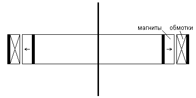
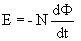
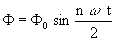
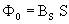
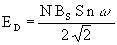
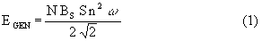
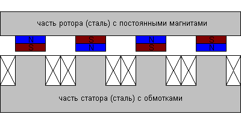
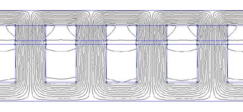
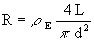

Расчет параметров низкооборотного
196-полюсного электрогенератора
с ротором диаметром 1 метр на постоянных магнитах
1. Введение
При использовании низкооборотных приводов, ось которых напрямую соединена с осью электрического генератора, возникает проблема получения достаточно высокого выходного напряжения и электрической мощности. Один из способов ее решения - многополюсный электрогенератор с ротором достаточно большого диаметра. Ротор электрогенератора при этом может быть выполнен с использованием постоянных магнитов. Электрогенератор с ротором на постоянных магнитах не имеет коллектора и щеток, что позволяет существенно повысить его надежность и время работы без обслуживания и ремонта. Применение постоянных магнитов с высокими значениями остаточной индукции и коэрцитивной силы позволяет существенно улучшить электрические характеристики генератора или уменьшить его габариты.
2. Варианты конструкции электрогенератора
Электрогенератор с ротором на постоянных магнитах может быть построен по различным схемам, отличающимся друг от друга совместным расположением обмоток и магнитов. Магниты с чередующейся полярностью располагаются на роторе генератора. Обмотки с чередующимся направлением намотки располагаются на статоре генератора. Если ротор и статор представляют из себя соосные диски, то такой тип генератора назовем аксиальным или дисковым (рис. 2.1).
Рис. 2.1. Упрощенная схема электрогенератора с ротором на постоянных магнитах аксиального (дискового) типа.
Если ротор и статор представляют из себя коаксиальные соосные цилиндры, то такой тип генератора назовем радиальным или цилиндрическим (рис. 2.2). В генераторе радиального типа ротор может быть внутренним или внешним по отношению к статору.

Рис. 2.2. Упрощенная схема электрогенератора с ротором на постоянных магнитах радиального (цилиндрического) типа.
3. Расчет выходного напряжения электрогенератора
Попробуем оценить электрические параметры электрического генератора, конструкция которого определяется следующими данными:
Требуется найти:
Принятые обозначения (расчеты ведутся в системе СИ):
B
– магнитная индукция в зазоре между магнитным полюсом и полюсным наконечником
обмотки, Тл
B0 – амплитуда магнитной индукции в зазоре,
Тл
BS – усредненное по площади полюса значение магнитной индукции
в зазоре, Тл
d – диаметр обмоточного провода, м
E – электродвижущая сила (эдс) одной обмотки генератора,
В
E0 – амплитуда эдс одной обмотки генератора,
В
ED – действующее значение эдс одной обмотки генератора,
В
EGEN – действующее выходное напряжение генератора (напряжение
холостого хода), В
f – частота вращения генератора, Гц
j - плотность тока в проводах обмоток генератора, А/мм2
L – средняя длина витка обмотки,
м
n – число полюсов генератора
N – число витков обмотки
PMAX – электрическая мощность генератора в режиме короткого
замыкания, Вт
PV - удельная мощность (мощность на единицу
объема), рассеиваемая в обмотках генератора, Вт/м3
R – сопротивление одной обмотки
генератора, Ом
RGEN – внутреннее сопротивление генератора (суммарное
сопротивление обмоток), Ом
S – площадь полюса магнита (полюсного наконечника обмотки),
м2
t – текущее время, с
T – период вращения генератора, с
F – магнитный поток через сердечник обмотки,
Вб
F0
– амплитуда (максимальное значение)
магнитного потока через полюсной наконечник обмотки, Вб
l – фактор упаковки обмотки
rE
– удельное электрическое
сопротивление провода обмотки, Ом · м
w – круговая частота вращения генератора,
рад/с
В соответствии с законом электромагнитной индукции Фарадея [4] напряжение на выходе каждой обмотки генератора может быть рассчитано по формуле:

Можно считать, что магнитный поток через обмотку изменяется по гармоническому закону:

где F0 – максимальное значение магнитного потока, которое может быть найдено по формуле:

Тогда для действующего значения напряжения одной обмотки получаем:

Действующее значение выходного напряжения генератора в режиме холостого хода (n обмоток соединены последовательно):

что соответствует ранее произведенным расчетам [7] и подтверждено опытными конструкциями электрогенераторов [1, 5].
4. Расчет допустимой плотности тока в обмотках
Для провода с электрическим током удельная мощность (мощность на единицу объема), рассеиваемая в проводе из-за наличия электрического сопротивления и превращающаяся в тепло, может быть найдена по формуле:
PV = j2 rE
От плотности тока в обмотке зависит мощность тепловыделения и, соответственно, температура обмотки. Эта температура не должна превышать допустимой для данной марки провода. Расчет температуры внутри обмотки и, соответственно, допустимой плотности тока в обмотках можно произвести методом конечных элементов [2, 3, 6, 8]. Величина допустимой плотности тока в проводах обмоток зависит от конструкции статора и условий охлаждения и для данного расчетного случая может достигать 10 А/мм2, если фактор упаковки принять равным 0.6.
5. Расчет магнитной индукции в межполюсном зазоре
Расчет магнитной индукции в зазоре, а также магнитного потока, пронизывающего обмотку, можно произвести разными способами, в частности, методом конечных элементов [2, 3, 6, 8]. Конструкция части магнитной системы (статор с обмотками и ротор с постоянными магнитами) приведена на рис. 5.1. Магнитные цепи аксиального и радиального генераторов практически одинаковы: на стальном статоре сделаны прорези, в которые уложены обмотки, на стальном роторе крепятся постоянные магниты соответствующего размера. Между магнитами и стальными сердечниками обмоток имеется межполюсной зазор, величина которого определяется допусками при изготовлении деталей генератора и должна быть по возможности минимальной.

Рис. 5.1. Магнитная система электрогенератора на постоянных магнитах.
Распределение магнитного потока в магнитной системе электрогенератора показано на рис. 5.2.

Рис. 5.2. Распределение магнитного потока в магнитной системе электрогенератора на постоянных магнитах. Плотность тока в обмотках – 6 А/мм2 , в проводах обмоток – 10 А/мм2 (фактор упаковки 0.6). Ширина полюса 8 мм, ширина промежутка 8 мм, глубина прорези под обмотку 10 мм. Величина зазора между ротором и статором 1 мм.
При использовании магнитов состава неодим-железо-бор с остаточной индукцией примерно 1.2 Тл и коэрцитивной силой примерно 900 кА/м усредненное значение магнитной индукции через сердечник катушки BS составляет приблизительно 0.75 Тл при плотности тока в обмотках 6 А/мм2 (в проводах обмоток – 10 А/мм2, если фактор упаковки принять равным 0.6).
6. Расчет выходного напряжения и выходной мощности генератора
Для расчета выходного напряжения EGEN по формуле (1) имеем:
N = (4 ∙ 10 ∙ 0.6) / 2 = 12 витков (провод диаметром 1.6 мм (сечение 2 мм2) наматывается в окно размером 10 х 4 мм2, фактор упаковки равен 0.6
BS = 0.75 Тл
S = 0.05 ∙ 0.008 = 0.0004 м2
n ~ (3.14 ∙ 1000) / (8 + 8) ≈ 196
w = 6.28 рад/сек
Выходное напряжение генератора EGEN по формуле (1) получаем равным 307 вольт. Для медного провода диаметром 1.6 мм (сечение примерно 2 мм2) допустимая величина тока может составить 20 А. Тогда выходная мощность генератора при частоте вращения 1 оборот в секунду будет равна примерно 6 кВт. Часть мощности будет передаваться в нагрузку, а часть – рассеиваться на внутреннем сопротивлении обмоток генератора. Чтобы найти, какая часть мощности будет передаваться в нагрузку, а какая – рассеиваться на внутреннем сопротивлении обмоток генератора, необходимо рассчитать сопротивление обмоток.
Сопротивление одной обмотки может быть найдено по формуле:

В нашем случае:
rE = 1.67 ∙ 10-8 Ом ∙ м (медный обмоточный провод)
d = 1.6 мм
L = 2 ∙ (8 + 4 + 50 + 4) ∙ 12 = 1584 мм = 1.584 м
Тогда сопротивление одной обмотки R ≈ 0.0132 Ом, а внутреннее сопротивление генератора при последовательном включении 196 обмоток RGEN = 196 ∙ 0.0132 ≈ 2.6 Ом
При токе в 20 А на внутреннем сопротивлении генератора будет рассеиваться мощность примерно 1 кВт, а остальная мощность (около 5 кВт) будет передаваться в нагрузку. Сопротивление нагрузки для тока 20 А должно быть равно (307 / 20) – 2.6 = 12.75 Ом.
7. Замечание
При изготовлении рассчитанного выше электрогенератора необходимо учитывать следующее. Если число обмоток равно числу магнитов, то при нахождении сердечника обмотки напротив магнита за счет сил притяжения возникает большой момент сопротивления, для преодоления которого потребуется значительное усилие на валу. Поэтому можно увеличить или уменьшить число обмоток на единицу по сравнению с числом магнитов (195 или 197 обмоток, 196 магнитов), что позволит существенно уменьшить амплитудные значения момента сопротивления. Подобное решение использовано в конструкции 6-полюсных генераторов [1] (число полюсов магнита n = 6, число обмоток m = 7) и [5] (число полюсов магнита n = 6, число обмоток в каждой из двух групп m = 5, дополнительно группы обмоток сдвинуты друг относительно друга на угол в 36 градусов). Можно вообще отказаться от применения стальных сердечников в обмотках, тогда момент сопротивления в режиме холостого хода будет близок к нулю при любом положении ротора. Такие обмотки необходимо делать минимальной высоты, сравнимой с величиной зазора между магнитом и обмоткой, чтобы уменьшение магнитной индукции в зазоре было не слишком существенным. Число обмоток может быть при этом равно числу магнитов (196).
По вопросам расчета конкретных схем электрических генераторов обращайтесь к автору (см. раздел Контактная информация).
Ссылки:
03.09.2007
11.02.2009
Альтернативные источники энергии
Компьютеры и
Интернет
Магнитные поля
Механотронные системы
Перспективные
разработки
Электроника и
технология